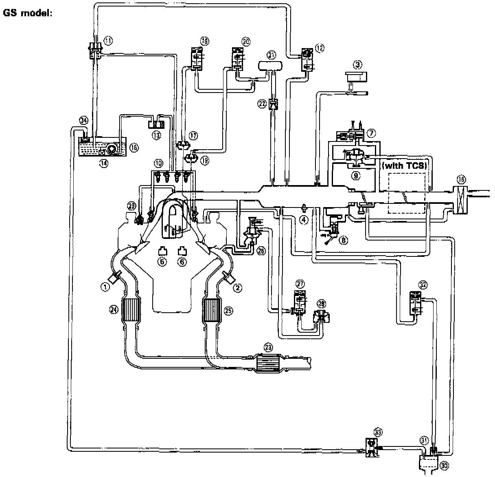

GS Models

(1) LEFT HEATED OXYGEN SENSOR (HO2S)
(2) RIGHT HEATED OXYGEN SENSOR (HO2S)
(3) MANIFOLD ABSOLUTE PRESSURE (MAP) SENSOR
(4) INTAKE AIR TEMPERATURE (IAT) SENSOR
(5) LEFT KNOCK SENSOR (KS)
(6) RIGHT KNOCK SENSOR (KS)
(7) IDLE AIR CONTROL (IAC) VALVE
(8) FAST IDLE THERMO VALVE
(9) STARTING AIR VALVE
(10) FUEL INJECTOR
(11) FUEL PRESSURE REGULATOR
(12) FUEL PRESSURE REGULATOR CONTROL SOLENOID VALVE
(13) FUEL FILTER
(14) FUEL PUMP (FP)
(15) FUEL TANK
(16) AIR CLEANER (ACL)
(17) INTAKE AIR BYPASS (IAB) LOW CONTROL DIAPHRAGM VALVE
(18) INTAKE AIR BYPASS (IAB) LOW CONTROL SOLENOID VALVE
(19) INTAKE AIR BYPASS (IAB) HIGH CONTROL DIAPHRAGM VALVE
(20) INTAKE AIR BYPASS (IAB) HIGH CONTROL SOLENOID VALVE
(21) INTAKE AIR BYPASS (IAB) VACUUM TANK
(22) INTAKE AIR BYPASS (IAB) CHECK VALVE
(23) THREE WAY CATALYTIC CONVERTER (TWC)
(24) LEFT WARM UP THREE WAY CATALYTIC CONVERTER (WU-TWC)
(25) RIGHT WARM UP THREE WAY CATALYTIC CONVERTER (WU-TWC)
(26) EXHAUST GAS RECIRCULATION (EGR) VALVE AND LIFT SENSOR
(27) EXHAUST GAS RECIRCULATION (EGR) CONTROL SOLENOID VALVE
(28) EXHAUST GAS RECIRCULATION (EGR) VACUUM CONTROL VALVE
(29) POSITIVE CRANKCASE VENTILATION (PCV) VALVE
(30) EVAPORATIVE EMISSION (EVAP) CONTROL CANISTER
(31) EVAPORATIVE EMISSION (EVAP) PURGE CONTROL DIAPHRAGM VALVE
(32) EVAPORATIVE EMISSION (EVAP) PURGE CONTROL SOLENOID VALVE
(33) EVAPORATIVE EMISSION (EVAP) TWO WAY VALVE
(34) FUEL TANK EVAPORATIVE EMISSION (EVAP) VALVE